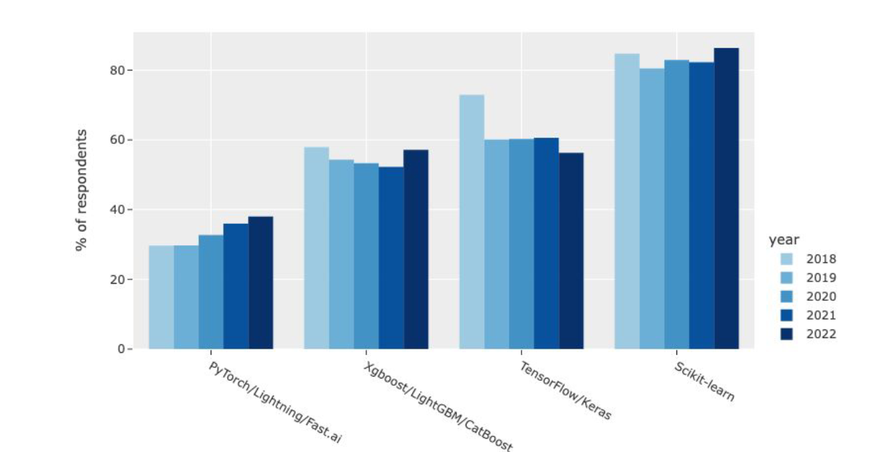
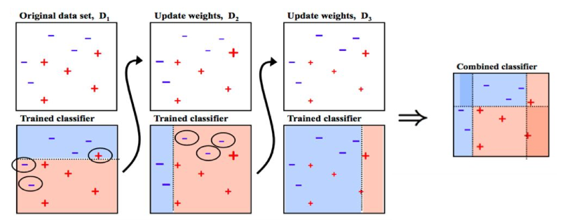
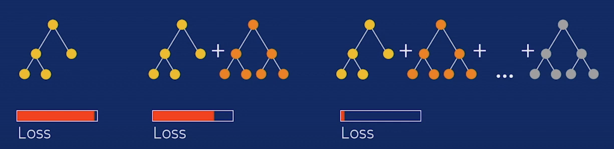
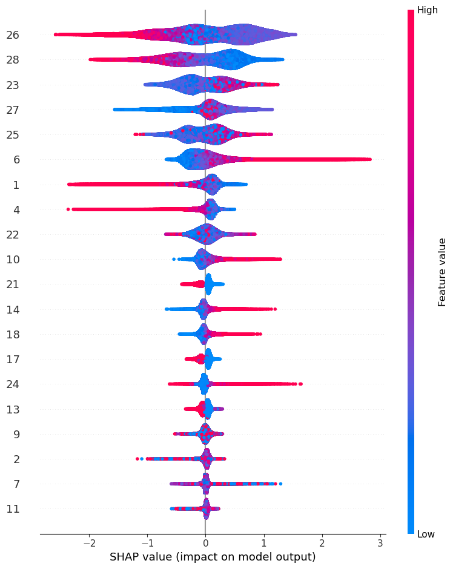
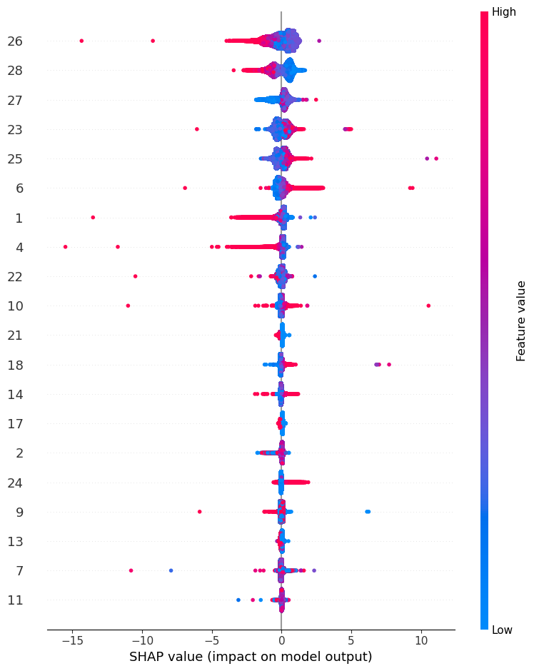
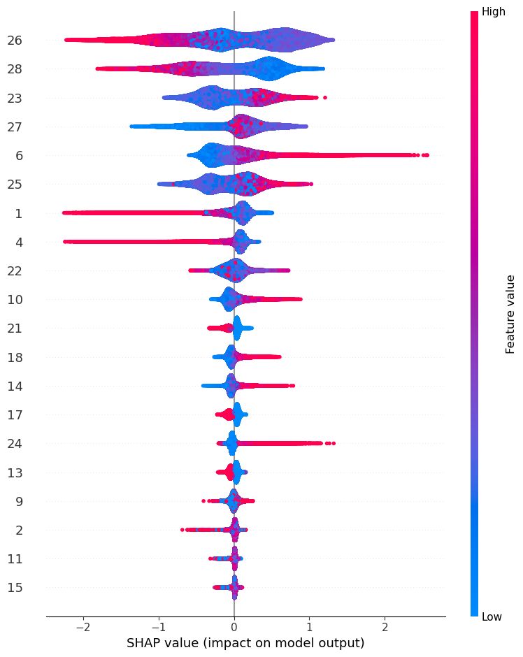

Boosted Trees: XGBoost vs. CatBoost vs. LightGBM#
An overview of boosting tree algorithms, their main differences, performance comparisons, and hyperparameter optimization. In this notebook, we will delve deeper into boosted trees, specifically comparing XGBoost, CatBoost, and LightGBM. We will explore the main differences, and parameters in each algorithm, compare their performance on different datasets, assess their CPU and GPU usage, conduct Optuna optimization, and examine SHAP values.
Introduction#
The purpose of this post is to introduce the fundamentals of boosting algorithms and the main difference between XGBoost, CatBoost, and LightGBM. We will give the reader some necessary keys to well understand and use related methods and be able to design adapted solutions when needed.
If we look at the 2022 Kaggle Data Science & ML Survey, we can see that Gradient Boosting Machines (GBMs) have been widely used in recent years. They are supervised machine learning algorithms that have consistently produced excellent results across a wide range of problems and have won numerous machine learning competitions.

They achieve this because boosting algorithms are very effective on tabular datasets and offer the same performance as other state-of-the-art deep learning techniques, but they are easier to implement and cost less in terms of computer resources.
Ensemble#
Many machine learning models primarily aim for high prediction accuracy using a single model, where boosting algorithms strive to enhance predictions by sequentially training a series of weak models, with each model compensating for the weaknesses of its predecessors.
First of all, we need to understand Ensemble Learning, it’s based on the idea of combining several simpler prediction models (weak learner), training them for the same task, and producing from them a more complex grouped model (strong learner) that is the sum of its parts.
For example, when creating an ensemble model based on several decision trees, which are simple yet high-variance models (often considered ‘weak learners’), we need to aggregate them to enhance their resistance to data variations. Therefore, it makes sense to train the trees separately, allowing each one to adapt to different parts of the dataset. This way, each tree gains knowledge about various data variations, collectively improving the ensemble’s predictive performance.
There are various ensemble learning methods, but in this text, we will primarily focus on Boosting, which is used in GBMs, but we can mention three algorithms that aim at combining weak learners:
Bagging: It is generally done with homogeneous predictors, each one operating independently in relation to the others, in a parallel manner. The final algorithm is then constructed by aggregating the results obtained from the base models in some form of average. Random Forest is one of the most famous algorithms.
Boosting: Generally implemented with homogeneous predictors, applied sequentially where the posterior model depends on the predecessor, and then these models are combined in the final ensemble. GBMs work like this
Stacking: It is typically done with heterogeneous predictors, training them in parallel, and then combining their outputs by training a meta-model that generates predictions based on the predictions of the various weak models. Here we can combine RandomForest with DecisionTree for example.
AdaBoost#
AdaBoost is a specific Boosting algorithm developed for classification problems hte original AdaBoost algorithm is designed for classification problems, where the output is either −1 or 1, and the final prediction for a given instance is a weighted sum of each generated weak classifier
Here, the weights \(\alpha_m\) are computed by the boosting algorithm, and the idea is to increase the influence of weak learners who are more accurate while simultaneously penalizing those who are not. The weakness is identified by the weak estimator error rate
Initialize the observation weights \(w_i = 1/N, i = 1, 2, . . . , N .\)
For \(m=1\) to \(M\):
2.1. Fit a classifier \(G_m(x)\) to the training data using weights \(w_i\)
2.2. Compute \(err_m = \frac{\sum_{i=1}^Nw_i\mathbf{1}(y_i\neq G_m(x_i))}{\sum_{i=1}^Nw_i}\)
2.3. Compute \(\alpha_m = log((1-err_m)/err_m)\)
2.4. Set \(w_i \rightarrow w_i\cdot exp[\alpha_m \cdot \mathbf{1}(y_i\neq G_m(x_i))],i=1,2,...,N\)
Output \(G(x) = sign\bigr[\sum^M_{m=1}\alpha_m\cdot G_m(x)\bigr]\)
From [1][2]
 Marsh, Brendan (2016). Multivariate Analysis of the Vector Boson Fusion Higgs Boson
Scikit-Learn have an implementation of AdaBoost
from sklearn.ensemble import AdaBoostClassifier
from sklearn.datasets import make_classification
X, y = make_classification(n_samples=1000, n_features=4,
n_informative=2, n_redundant=0,
random_state=0, shuffle=False)
clf = AdaBoostClassifier(n_estimators=100, random_state=0)
clf.fit(X, y)
clf.predict([[0, 0, 0, 0]])
clf.score(X, y)
0.983
from sklearn.ensemble import AdaBoostClassifier
from sklearn.tree import DecisionTreeClassifier
from sklearn.datasets import load_iris
from sklearn.model_selection import train_test_split
from sklearn.metrics import accuracy_score
iris = load_iris()
X, y = iris.data, iris.target
# Split the data into training and testing sets
X_train, X_test, y_train, y_test = train_test_split(X, y, test_size=0.2, random_state=42)
# Create an AdaBoostClassifier with a base DecisionTreeClassifier
clf = AdaBoostClassifier(n_estimators=100, random_state=0)
# Fit the classifier to the training data
clf.fit(X_train, y_train)
# Make predictions on the test data
y_pred = clf.predict(X_test)
# Evaluate the model
clf.score(X, y)
0.96
GBMs#
The Gradient Boosting Machines algorithm works by optimizing any given differentiable loss function, using gradient descent [3].
We can write the GBM model as
\(\beta_{m}h(x; a_m)\) are the base functions learners, where \(\beta_m\) is the weight, and \(a_m\) the parameters of the learner \(h\). We have a loss function \(L(y_i,F_m(x_i))\), so we would like to find all optimal values of these parameters that would minimize this loss function.
In these situations where is infeasible we can try a ‘greedy-stagewise’ approach for \(m=1,2,3,...,M\)
Then we can use a vectorized notation and make it similar to the gradient descent formula. The learning rate, \(\eta\) shrinks the influence of the new learner.
The gradient of the loss function \(L\) with relation to the last estimate \(F_{m−1}(x)\) is,
The gradient of the loss function \(L\) with respect to the last prediction is sometimes called pseudo-residual, and written as \(r_{m−1}\) can be written as
\(F_0(\mathbf{X}) = \arg\min_v\sum_{i=1}^n L(y^{(i)},v)\)
For \(m=1\) to \(M\):
2.1. \(\mathbf r_{m_1} = \nabla \hat y_{m-1}L(y,\hat{y}_{\mathbf{m-1}})\)
2.2. \(\alpha = \arg\min_{\alpha,\beta}\sum_{i=1}^n(\mathbf{r}_{m-1}^{(i)}-\beta h(\mathbf{x}^{(i)};\alpha))^2\)
2.3. \(\beta = \arg\min_{\beta}\sum_{i=1}^nL(y^{(i)},F_{m-1}(\mathbf{x}^{(i))}+\beta h(\mathbf{x}^{(i))};\alpha_m)\)
2.4. \(\Delta_m(X) = \beta_mh(\mathbf{X};\alpha_m)\)
2.5 \(F_m(\mathbf{X}) = F_{m-1}(\mathbf{X}) + \eta \Delta_m(X)\)
Output \(F_m\)
From [3]
As you can see, it is an iterative algorithm that usually works with decision trees. We train a sequence of decision trees to gradually reduce the training error (each new tree tries to predict the residual error, this is the error at that current iteration and then we multiplied by the learning rate

As you can see the final prediction is:
initial_prediction + learning_rateresidual_0 + learning_rateresidual_1 _+ … learning_rate*residual_N
Or
\(F_m(\mathbf{X}) = F_{m-1}(\mathbf{X}) + \eta \Delta_m(X)\)
We also can find the Gradient Boosting function in scikit-learn
import pandas as pd
import numpy as np
from sklearn.metrics import classification_report
from sklearn.model_selection import KFold
from sklearn.datasets import load_breast_cancer
from sklearn.ensemble import GradientBoostingClassifier
X = pd.DataFrame(load_breast_cancer()['data'],columns=load_breast_cancer()['feature_names'])
y = pd.DataFrame(load_breast_cancer()['target'],columns=['target'])
kf = KFold(n_splits=5,random_state=42,shuffle=True)
for train_index, index in kf.split(X):
X_train,X_val = X.iloc[train_index],X.iloc[index],
y_train,y_val = y.iloc[train_index],y.iloc[index],
gradient_booster = GradientBoostingClassifier()
gradient_booster.fit(X_train,y_train.values.ravel())
print(classification_report(y_val,gradient_booster.predict(X_val)))
precision recall f1-score support
0 0.98 0.93 0.96 46
1 0.96 0.99 0.97 67
accuracy 0.96 113
macro avg 0.97 0.96 0.96 113
weighted avg 0.96 0.96 0.96 113
XGBoost vs. CatBoost vs. LightGBM#
XGBoost, Catboost, and LightGBM are all variations of gradient boosting algorithms, each employing decision trees as weak learners. I strongly recommend reading the papers [4], [5], [6]. Now, I’m going to highlight the main differences in each algorithm.
XGBoost |
CatBoost |
LightGBM |
|
|---|---|---|---|
Developer |
DMLC |
Yandex |
Microsoft |
Release Year |
2014 |
2017 |
2016 |
Tree Symmetry |
Asymmetric: Level-wise tree growth |
Symmetric |
Asymmetric: Leaf-wise tree growth |
Splitting Method |
Pre-sorted and histogram-based algorithms |
Greedy |
GOSS |
Categorical Columns |
Support but must use numerical columns, cannot interpret ordinal category |
Support |
Support |
Text Columns |
Not Support |
Support: Bag-of-Words, Naive-Bayes or BM25 to calculate numerical features from text |
Not Support |
Missing Values |
Handle |
Handle |
Handle |
Training on |
CPU and GPU |
CPU and GPU |
CPU and GPU |
Others things |
Works with Spark |
Easy generate the Learning Curve |
Have a RandomForest “boosting method” |
All of the models have different loss functions in their objectives, some of which are as follows:
For Regression:
L2: mean squared error (default, recovers the mean value)
L1: mean absolute error (good for outliers)
MAPE: mean absolute percentage error (good for time series)
Quantile: predict quantiles
Poisson
For Classification:
Logloss for binary classification
Multiclass and cross-entropy for multi-class problems
For other loss functions, you can refer to the documentation of all three algorithms.
Tree Symmetry#


CatBoost produces symmetric trees (or balanced trees). This refers to the splitting condition across all the nodes at the same depth. On the other hand, XGBoost and LightGBM produce asymmetric trees, meaning that the splitting condition at each node can be different.
Another important thing to note is that LightGBM grows leaf-wise (horizontally), while XGBoost grows level-wise (vertically). The picture below can show in more detail the differences in these growth types. This approach can lead to deeper trees with fewer nodes, potentially making it faster to train but may require more memory.

Splitting Method#
This determines how the splitting is determined in each algorithm.
In XGBoost, the pre-sorted algorithm considers all features and sorts them by value. The histogram algorithm groups feature values into discrete bins and finds the split point based on these bins. However, it is slower than GOSS.
CatBoost uses a greedy method where a list of possible candidates for feature splits is assigned to the leaf, and the split that results in the smallest penalty is selected.
In LightGBM, Gradient-based one-sided sampling (GOSS) retains all the data with large gradients and performs random sampling for data instances with small gradients (small training error). This results in fewer data instances used to train the model.
Prevent Overfitting#
All of the tree models come equipped with excellent parameters designed to mitigate overfitting. We will utilize many of these parameters in our Optuna hyperparameter optimization, some of them are:
early_stopping_rounds: This parameter employs an integer to halt the learning process. It identifies a point at which the validation score no longer improves, and in some cases, it may even start to deteriorate, while the training score continues to improve. This is not a hyperparameter that we intend to tune, but it’s a crucial parameter to use, and it’s not active by default.
reg_alpha or lambda_l1: These parameters represent the coefficient at the L1 regularization term of the cost function.
reg_lambda or l2_leaf_reg: These parameters represent the coefficient at the L2 regularization term of the cost function.
learning_rate: This setting is used to control the gradient step size and, in turn, affects the overall training time. Smaller values require more iterations for training.
depth or max_depth: This parameter limits the maximum depth of the tree model. It is employed to combat overfitting when dealing with small datasets.
num_leaves or max_leaves: The maximum number of leaves in the resulting tree
random_strength: This parameter determines the amount of randomness applied when scoring splits during the selection of the tree structure. You can adjust this parameter to mitigate the risk of overfitting in your model.
Hyperparameter Tuning#
As you can see all three libraries offer a variety of hyperparameters to tune, and their effectiveness can vary depending on the dataset. We will use Optuna in our tests
Models Performance CPU vs. GPU#
In this section, we are going to use three different datasets: epsilon, Higgs, and breast cancer. However, we will not delve deeply into the typical steps of a data science project, such as EDA (Exploratory Data Analysis), pre-processing, handling missing values, plotting some variables, and analyzing correlations. Our primary focus will be the performance of out-of-the-box models, as they are designed to handle certain aspects by default, such as missing values.
Epsilon#
Epsilon dataset. This dataset is best suited for binary classification.
The training dataset contains 400000 objects. Each object is described by 2001 columns. The first column contains the label value, all other columns contain numerical features.
The validation dataset contains 100,000 objects. The structure is identical to the training dataset.
from catboost.datasets import epsilon
epsilon_train, epsilon_test = epsilon()
epsilon_train.shape, epsilon_test.shape
((400000, 2001), (100000, 2001))
# convert target -1 to 0
epsilon_train[epsilon_train[0] <= 0] = 0
epsilon_test[epsilon_test[0] <= 0] = 0
X_train = epsilon_train.loc[:,1:]
X_test = epsilon_test.loc[:,1:]
y_train = epsilon_train.loc[:,0]
y_test = epsilon_test.loc[:,0]
X_train.shape, X_test.shape, y_train.shape, y_test.shape
((400000, 2000), (100000, 2000), (400000,), (100000,))
import timeit
from catboost import CatBoostClassifier
from xgboost import XGBClassifier
from lightgbm import LGBMClassifier
from sklearn.metrics import roc_auc_score
from sklearn import metrics
time_cpu = ['CPU']
results_auc_cpu = []
models = [XGBClassifier(),
CatBoostClassifier(verbose=False),
LGBMClassifier(verbose=-1)]
for i in range(len(models)):
start = timeit.default_timer()
model_ = models[i].fit(X_train, y_train)
stop = timeit.default_timer()
time_cpu.append(stop-start)
y_prob = model_.predict_proba(X_test)[:,1]
fpr, tpr, thresholds = metrics.roc_curve(y_test, y_prob)
results_auc_cpu.append(metrics.auc(fpr, tpr))
time_cpu
['CPU', 100.57174560100248, 173.5943495399988, 29.465143476001685]
results_auc_cpu
[1.0, 1.0, 1.0]
models = [XGBClassifier(tree_method='gpu_hist'),
CatBoostClassifier(verbose=False,task_type="GPU"),
LGBMClassifier(verbose=-1,device='gpu')]
time_gpu = ['GPU']
results_auc_gpu = []
for i in range(len(models)):
start = timeit.default_timer()
model_ = models[i].fit(X_train, y_train)
stop = timeit.default_timer()
time_gpu.append(stop-start)
y_prob = model_.predict_proba(X_test)[:,1]
fpr, tpr, thresholds = metrics.roc_curve(y_test, y_prob)
results_auc_gpu.append(metrics.auc(fpr, tpr))
time_gpu
['GPU', 8.82751414100494, 18.60794683700078, 13.281327325996244]
results_auc_gpu
[1.0, 1.0, 1.0]
Higgs#
Higgs This is a classification problem to distinguish between a signal process that produces Higgs bosons and a background process that does not.
The training dataset contains 10500000 objects. Each object is described by 29 columns. The first column contains the label value, all other columns contain numerical features.
The validation dataset contains 5000000 objects. The structure is identical to the training dataset. Method call format
from catboost.datasets import higgs
higgs_train, higgs_test = higgs()
higgs_train.shape, higgs_test.shape
((10500000, 29), (500000, 29))
X_train = higgs_train.loc[:,1:]
X_test = higgs_test.loc[:,1:]
y_train = higgs_train.loc[:,0]
y_test = higgs_test.loc[:,0]
X_train.shape, X_test.shape, y_train.shape, y_test.shape
((10500000, 28), (500000, 28), (10500000,), (500000,))
from sklearn.metrics import roc_auc_score
from sklearn import metrics
time_cpu = ['CPU']
results_auc_cpu = []
models = [XGBClassifier(),
CatBoostClassifier(verbose=False),
LGBMClassifier(verbose=-1)]
for i in range(len(models)):
start = timeit.default_timer()
model_ = models[i].fit(X_train, y_train)
stop = timeit.default_timer()
time_cpu.append(stop-start)
y_prob = model_.predict_proba(X_test)[:,1]
fpr, tpr, thresholds = metrics.roc_curve(y_test, y_prob)
results_auc_cpu.append(metrics.auc(fpr, tpr))
time_cpu
['CPU', 208.93801863700355, 304.1608348700029, 30.22637001700059]
results_auc_cpu
[0.823429407021503, 0.8412804649425808, 0.8118326628507959]
models = [XGBClassifier(tree_method='gpu_hist'),
CatBoostClassifier(verbose=False,task_type="GPU"),
LGBMClassifier(verbose=-1,device='gpu')]
time_gpu = ['GPU']
results_auc_gpu = []
for i in range(len(models)):
start = timeit.default_timer()
model_ = models[i].fit(X_train, y_train)
stop = timeit.default_timer()
time_gpu.append(stop-start)
y_prob = model_.predict_proba(X_test)[:,1]
fpr, tpr, thresholds = metrics.roc_curve(y_test, y_prob)
results_auc_gpu.append(metrics.auc(fpr, tpr))
time_gpu
['GPU', 5.500959073993727, 43.70296749100089, 14.413947692002694]
results_auc_gpu
[0.8237744245413271, 0.8105542884220551, 0.8118326588372813]
Breast Cancer#
The breast cancer dataset is a classic and very easy binary classification dataset.
Features are computed from a digitized image of a fine needle aspirate (FNA) of a breast mass. They describe the characteristics of the cell nuclei present in the image
from sklearn.datasets import load_breast_cancer
breast_cancer = load_breast_cancer(as_frame=True).frame
from sklearn.model_selection import train_test_split
X = breast_cancer.drop(columns=['target'])
y = breast_cancer.loc[:,'target']
X_train, X_test, y_train, y_test = train_test_split(X, y, test_size=0.3, random_state=42)
X_train.shape, X_test.shape, y_train.shape, y_test.shape
((398, 30), (171, 30), (398,), (171,))
from sklearn.metrics import roc_auc_score
from sklearn import metrics
time_cpu = ['CPU']
results_auc_cpu = []
models = [XGBClassifier(),
CatBoostClassifier(verbose=False),
LGBMClassifier(verbose=-1)]
for i in range(len(models)):
start = timeit.default_timer()
model_ = models[i].fit(X_train, y_train)
stop = timeit.default_timer()
time_cpu.append(stop-start)
y_prob = model_.predict_proba(X_test)[:,1]
fpr, tpr, thresholds = metrics.roc_curve(y_test, y_prob)
results_auc_cpu.append(metrics.auc(fpr, tpr))
time_cpu
['CPU', 0.016339898997102864, 0.9324936460034223, 0.02608547400450334]
results_auc_cpu
[0.9947089947089948, 0.9972075249853027, 0.9944150499706055]
models = [XGBClassifier(tree_method='gpu_hist'),
CatBoostClassifier(verbose=False,task_type="GPU"),
LGBMClassifier(verbose=-1,device='gpu')]
time_gpu = ['GPU']
results_auc_gpu = []
for i in range(len(models)):
start = timeit.default_timer()
model_ = models[i].fit(X_train, y_train)
stop = timeit.default_timer()
time_gpu.append(stop-start)
y_prob = model_.predict_proba(X_test)[:,1]
fpr, tpr, thresholds = metrics.roc_curve(y_test, y_prob)
results_auc_gpu.append(metrics.auc(fpr, tpr))
time_gpu
['GPU', 0.0601679419996799, 17.182826510994346, 0.45593334099976346]
results_auc_gpu
[0.9938271604938271, 0.9977954144620811, 0.9952968841857731]
Optuna#
Now, let’s attempt to utilize Optuna with the three algorithms, applying it to our largest dataset. We will employ early_stopping to determine the optimal number of iterations that minimize the validation loss, and we’ll also consider class weights using the ‘balanced’ option.
Another valuable aspect to explore is the use of sample weights, which can be passed as an array of shape n_samples. This feature proves exceptionally useful in applications such as churn modeling, where we aim to prevent the churn of high-value customers with greater profitability.
Here, we have a function that calculates numerous classification metrics. While our primary optimization focus will be on AUC, feel free to make adjustments as needed.
import sys
import timeit
import gc
from sklearn import metrics
import optuna
from optuna.visualization import plot_optimization_history
from optuna.visualization import plot_param_importances
from catboost import CatBoostClassifier
from xgboost import XGBClassifier
import lightgbm as lightgbm
from lightgbm import LGBMClassifier
def metrics_validation(y_test, y_prob):
'''
Input:
y_prob: model predict prob
y_test: target
Output: Metrics of validation
auc, ks, log_loss, accuracy
'''
fpr, tpr, thresholds = metrics.roc_curve(y_test, y_prob)
auc = metrics.auc(fpr, tpr)
log_loss = metrics.log_loss(y_test, y_prob)
ks = max(tpr - fpr) # Kolmogorov-Smirnov
accu = metrics.accuracy_score(y_test, y_prob.round())
precision = metrics.precision_score(y_test, y_prob.round()) # tp / (tp + fp)
recall = metrics.recall_score(y_test, y_prob.round()) # tp / (tp + fn)
f1_score = metrics.f1_score(y_test, y_prob.round()) # 2 * (precision * recall) / (precision + recall)
return auc, log_loss, ks,
Creating our objective function and the set of hyperparameter space.”
def objective(trial, X_train, y_train, X_test, y_test, balanced, method):
'''
Input:
trial: trial of the test
X_train:
y_train:
X_test:
y_test:
balanced:balanced or None
method: XGBoost, CatBoost or LGBM
Output: Metrics of validation
auc, ks, log_loss
metrics_validation(y_test, y_pred)[0]
'''
gc.collect()
if method=='LGBM':
param_grid = {'learning_rate': trial.suggest_float('learning_rate', 0.0001, 0.1, log=True),
'num_leaves': trial.suggest_int('num_leaves', 2, 256),
'lambda_l1': trial.suggest_float("lambda_l1", 1e-8, 10.0, log=True),
'lambda_l2': trial.suggest_float("lambda_l2", 1e-8, 10.0, log=True),
'min_data_in_leaf': trial.suggest_int('min_data_in_leaf', 5, 100),
'max_depth': trial.suggest_int('max_depth', 5, 64),
'feature_fraction': trial.suggest_float("feature_fraction", 0.4, 1.0),
'bagging_fraction': trial.suggest_float("bagging_fraction", 0.4, 1.0),
'device':'gpu',
'bagging_freq': trial.suggest_int("bagging_freq", 1, 7),
}
model = LGBMClassifier(**param_grid)
print('LGBM - Optimization using optuna')
model.fit(X_train, y_train)
y_pred = model.predict_proba(X_test)[:,1]
if method=='CATBoost':
param_grid = {'learning_rate': trial.suggest_float('learning_rate', 0.0001, 0.1, log=True),
'depth': trial.suggest_int("depth", 4, 10),
'max_bin': trial.suggest_int('max_bin', 200, 400),
'min_data_in_leaf': trial.suggest_int('min_data_in_leaf', 1, 300),
'l2_leaf_reg': trial.suggest_float('l2_leaf_reg', 1e-8, 10, log = True),
'random_seed': 42,
'random_strength': trial.suggest_float("random_strength", 1e-8, 10.0, log=True),
'bagging_temperature': trial.suggest_float("bagging_temperature", 0.0, 10.0),
'od_type': trial.suggest_categorical("od_type", ["IncToDec", "Iter"]),
'task_type':'GPU',
'od_wait': trial.suggest_int("od_wait", 10, 50),
}
if len(X_train._get_numeric_data().columns) != len(X_train.columns):
categorical_features_indices = list(X_train.select_dtypes(exclude='number').columns)
model = CatBoostClassifier(**param_grid)
print('CATBoost - Optimization using optuna')
model.fit(X_train, y_train,cat_features=categorical_features_indices,verbose=False)
y_pred = model.predict_proba(X_test)[:,1]
else:
model = CatBoostClassifier(**param_grid)
print('CATBoost - Optimization using optuna')
model.fit(X_train, y_train,verbose=False)
y_pred = model.predict_proba(X_test)[:,1]
if method=='XGBoost':
param_grid = {'learning_rate': trial.suggest_float('learning_rate', 0.0001, 0.1, log=True),
'max_depth': trial.suggest_int('max_depth', 3, 16),
'min_child_weight': trial.suggest_int('min_child_weight', 1, 300),
'gamma': trial.suggest_float('gamma', 1e-8, 1.0, log = True),
'alpha': trial.suggest_float('alpha', 1e-8, 1.0, log = True),
'lambda': trial.suggest_float('lambda', 0.0001, 10.0, log = True),
'colsample_bytree': trial.suggest_float('colsample_bytree', 0.1, 0.8),
'booster': 'gbtree',
'tree_method':'gpu_hist',
'random_state': 42,
}
model = XGBClassifier(**param_grid)
print('XGBoost - Optimization using optuna')
model.fit(X_train, y_train,verbose=False)
y_pred = model.predict_proba(X_test)[:,1]
auc_res, log_loss_res, ks_res = metrics_validation(y_test, y_pred)
print('auc:'+str(auc_res),', log_loss:'+str(log_loss_res),', ks:'+str(ks_res))
return metrics_validation(y_test, y_pred)[0]
Tuning the model: Here, the study will be created, and an important aspect to note is the time_max_tuning, which represents the maximum time in seconds to stop.
def tuning(X_train, y_train, X_test, y_test, balanced, method):
'''
Input:
trial:
x_train:
y_train:
X_test:
y_test:
balanced:balanced or not balanced
method: XGBoost, CatBoost or LGBM
Output: Metrics of validation
auc, ks, log_loss
metrics_validation(y_test, y_pred)[0]
'''
study = optuna.create_study(direction='maximize', study_name=method+' Classifier')
func = lambda trial: objective(trial, X_train, y_train, X_test, y_test, balanced, method)
print('Starting the optimization')
time_max_tuning = 15*60 # max time in seconds to stop
study.optimize(func, timeout=time_max_tuning)
return study
Train the model while implementing early_stopping, and then return the best model.
def train(X_train, y_train, X_test, y_test, balanced, method):
'''
Input:
X_train:
y_train:
X_test:
y_test:
balanced:balanced or None
method: XGBoost, CatBoost or LGBM
Output: predict model
'''
print('Tuning')
study = tuning(X_train, y_train, X_test, y_test, balanced, method)
if method=='LGBM':
model = LGBMClassifier(**study.best_params)
print('Last Fit')
model.fit(X_train, y_train, eval_set=[(X_test,y_test)],
callbacks = [lightgbm.early_stopping(stopping_rounds=100), lightgbm.log_evaluation(period=5000)])
if method=='CATBoost':
model = CatBoostClassifier(**study.best_params)
if len(X_train._get_numeric_data().columns) != len(X_train.columns):
categorical_features_indices = list(X_train.select_dtypes(exclude='number').columns)
print('Last Fit')
model.fit(X_train, y_train,cat_features=categorical_features_indices, eval_set=[(X_test,y_test)],
early_stopping_rounds=100,verbose = False)
else:
print('Last Fit')
model.fit(X_train, y_train, eval_set=[(X_test,y_test)],
early_stopping_rounds=100,verbose = False)
if method=='XGBoost':
model = XGBClassifier(**study.best_params)
print('Last Fit')
model.fit(X_train, y_train, eval_set=[(X_test,y_test)],
early_stopping_rounds=100,verbose = False)
return model, study
X_train = higgs_train.loc[:,1:]
X_test = higgs_test.loc[:,1:]
y_train = higgs_train.loc[:,0]
y_test = higgs_test.loc[:,0]
X_train.shape, X_test.shape, y_train.shape, y_test.shape
((10500000, 28), (500000, 28), (10500000,), (500000,))
xgb_model, study_lgbm = train(X_train, y_train, X_test, y_test, balanced='balanced', method='XGBoost')
cat_model, study_lgbm = train(X_train, y_train, X_test, y_test, balanced='balanced', method='CATBoost')
lgbm_model, study_lgbm = train(X_train, y_train, X_test, y_test, balanced='balanced', method='LGBM')
AUC in the final models
XGBoost |
CatBoost |
LightGBM |
|
|---|---|---|---|
Number of Trials |
45 |
15 |
36 |
AUC |
0.8437951609576797 |
0.8363981459518963 |
0.8268745059988453 |
Final hyperparameters in our models#
XGBoost#
[I 2023-10-03 20:11:08,770] Trial 23 finished with value: 0.8437951609576797 and parameters: {'learning_rate': 0.09497201157768914, 'max_depth': 16, 'min_child_weight': 123, 'gamma': 0.0044338139693267655, 'alpha': 1.8619255252326368e-07, 'lambda': 0.0003144628784949497, 'colsample_bytree': 0.7377209265117873}. Best is trial 23 with value: 0.8437951609576797.
xgb_model
XGBClassifier(alpha=1.8619255252326368e-07, base_score=None, booster=None,callbacks=None, colsample_bylevel=None, colsample_bynode=None, colsample_bytree=0.7377209265117873, early_stopping_rounds=None, enable_categorical=False, eval_metric=None, feature_types=None, gamma=0.0044338139693267655, gpu_id=None, grow_policy=None, importance_type=None, interaction_constraints=None, lambda=0.0003144628784949497, learning_rate=0.09497201157768914, max_bin=None, max_cat_threshold=None, max_cat_to_onehot=None, max_delta_step=None, max_depth=16, max_leaves=None, min_child_weight=123, missing=nan, monotone_constraints=None, n_estimators=100, n_jobs=None, num_parallel_tree=None, ...)</pre><b>In a Jupyter environment, please rerun this cell to show the HTML representation or trust the notebook. <br />On GitHub, the HTML representation is unable to render, please try loading this page with nbviewer.org.</b></div><div class="sk-container" hidden><div class="sk-item"><div class="sk-estimator sk-toggleable"><input class="sk-toggleable__control sk-hidden--visually" id="sk-estimator-id-2" type="checkbox" checked><label for="sk-estimator-id-2" class="sk-toggleable__label sk-toggleable__label-arrow">XGBClassifier</label><div class="sk-toggleable__content"><pre>XGBClassifier(alpha=1.8619255252326368e-07, base_score=None, booster=None, callbacks=None, colsample_bylevel=None, colsample_bynode=None, colsample_bytree=0.7377209265117873, early_stopping_rounds=None, enable_categorical=False, eval_metric=None, feature_types=None, gamma=0.0044338139693267655, gpu_id=None, grow_policy=None, importance_type=None, interaction_constraints=None, lambda=0.0003144628784949497, learning_rate=0.09497201157768914, max_bin=None, max_cat_threshold=None, max_cat_to_onehot=None, max_delta_step=None, max_depth=16, max_leaves=None, min_child_weight=123, missing=nan, monotone_constraints=None, n_estimators=100, n_jobs=None, num_parallel_tree=None, ...)</pre></div></div></div></div></div>CatBoost#
[I 2023-10-03 20:38:38,660] Trial 13 finished with value: 0.8363981459518963 and parameters: {'learning_rate': 0.043389728663017664, 'depth': 10, 'max_bin': 318, 'min_data_in_leaf': 39, 'l2_leaf_reg': 0.0018658114257615013, 'random_strength': 4.627506435088902e-07, 'bagging_temperature': 0.46427970539192914, 'od_type': 'IncToDec', 'od_wait': 35}. Best is trial 13 with value: 0.8363981459518963.cat_model.get_params(){'learning_rate': 0.043389728663017664, 'depth': 10, 'l2_leaf_reg': 0.0018658114257615013, 'od_wait': 35, 'od_type': 'IncToDec', 'random_strength': 4.627506435088902e-07, 'bagging_temperature': 0.46427970539192914, 'max_bin': 318, 'min_data_in_leaf': 39}LightGBM#
[I 2023-10-03 21:05:22,366] Trial 29 finished with value: 0.8268745059988453 and parameters: {'learning_rate': 0.09805228364360181, 'num_leaves': 165, 'lambda_l1': 5.131359320461935, 'lambda_l2': 1.712267871355936, 'min_data_in_leaf': 17, 'max_depth': 41, 'feature_fraction': 0.7265862458914822, 'bagging_fraction': 0.6554658706889013, 'bagging_freq': 3}. Best is trial 29 with value: 0.8268745059988453lgbm_modelLGBMClassifier(bagging_fraction=0.6554658706889013, bagging_freq=3,feature_fraction=0.7265862458914822, lambda_l1=5.131359320461935, lambda_l2=1.712267871355936, learning_rate=0.09805228364360181, max_depth=41, min_data_in_leaf=17, num_leaves=165)</pre><b>In a Jupyter environment, please rerun this cell to show the HTML representation or trust the notebook. <br />On GitHub, the HTML representation is unable to render, please try loading this page with nbviewer.org.</b></div><div class="sk-container" hidden><div class="sk-item"><div class="sk-estimator sk-toggleable"><input class="sk-toggleable__control sk-hidden--visually" id="sk-estimator-id-3" type="checkbox" checked><label for="sk-estimator-id-3" class="sk-toggleable__label sk-toggleable__label-arrow">LGBMClassifier</label><div class="sk-toggleable__content"><pre>LGBMClassifier(bagging_fraction=0.6554658706889013, bagging_freq=3, feature_fraction=0.7265862458914822, lambda_l1=5.131359320461935, lambda_l2=1.712267871355936, learning_rate=0.09805228364360181, max_depth=41, min_data_in_leaf=17, num_leaves=165)</pre></div></div></div></div></div>SHAP in XGBoost, CatBoost, LightGBM#
SHAP using CPU#
I have to use SHAP on the test dataset because the training dataset was too heavy.
import shap time_cpu_shap = ['CPU'] start = timeit.default_timer() explainer = shap.TreeExplainer(xgb_model) shap_values = explainer.shap_values(X_test) stop = timeit.default_timer() time_cpu_shap.append(stop-start) shap.summary_plot(shap_values, X_test,show=False)
import shap start = timeit.default_timer() explainer = shap.TreeExplainer(cat_model) shap_values = explainer.shap_values(X_test) stop = timeit.default_timer() time_cpu_shap.append(stop-start) shap.summary_plot(shap_values, X_test,show=False)
import shap start = timeit.default_timer() explainer = shap.TreeExplainer(lgbm_model) shap_values = explainer.shap_values(X_test) stop = timeit.default_timer() time_cpu_shap.append(stop-start) shap.summary_plot(shap_values[1], X_test,show=False)LightGBM binary classifier with TreeExplainer shap values output has changed to a list of ndarray
time_cpu_shap['CPU', 4620.933531924995, 32.60655866500747, 113.2479361500009]SHAP using GPU#
I have tried to run SHAP on my GPU, but I’m encountering problems with my CUDA version, and currently, I believe it’s a common issue with my modern GPU. BUG: No GPU Support for Modern CUDA.
But you can try to run this code, after installing
nvcc. See GPUTreeimport shap time_gpu_shap = ['GPU'] start = timeit.default_timer() explainer = shap.explainers.GPUTree(xgb_model) shap_values = explainer.shap_values(X_test) stop = timeit.default_timer() time_gpu_shap.append(stop-start) shap.summary_plot(shap_values, X_test,show=False)start = timeit.default_timer() explainer = shap.explainers.GPUTree(cat_model) shap_values = explainer.shap_values(X_test) stop = timeit.default_timer() time_gpu_shap.append(stop-start) shap.summary_plot(shap_values, X_test,show=False)start = timeit.default_timer() explainer = shap.explainers.GPUTree(lgbm_model) shap_values = explainer.shap_values(X_test) stop = timeit.default_timer() time_gpu_shap.append(stop-start) shap.summary_plot(shap_values[1], X_test,show=False)Bibliography#
You can find all files in this repository
References, and, of course, you can access the documentation for each algorithm.
[1] - Schapire, Robert E(1999). A Short Introduction to Boosting
[2] - HASTIE, T.; TIBSHIRANI, R.; FRIEDMAN, J. (2009). The Elements of Statistical Learning
[3] - Jerome H. Friedman (2001). GREEDY FUNCTION APPROXIMATION:A GRADIENT BOOSTING MACHINE
[4] - Tianqi Chen, Carlos Guestrin (2016).XGBoost: {A} Scalable Tree Boosting System
[7] - Anna Veronika Dorogush: Mastering gradient boosting with CatBoost
[8] - Pedro Tabacof Unlocking the Power of Gradient-Boosted Trees